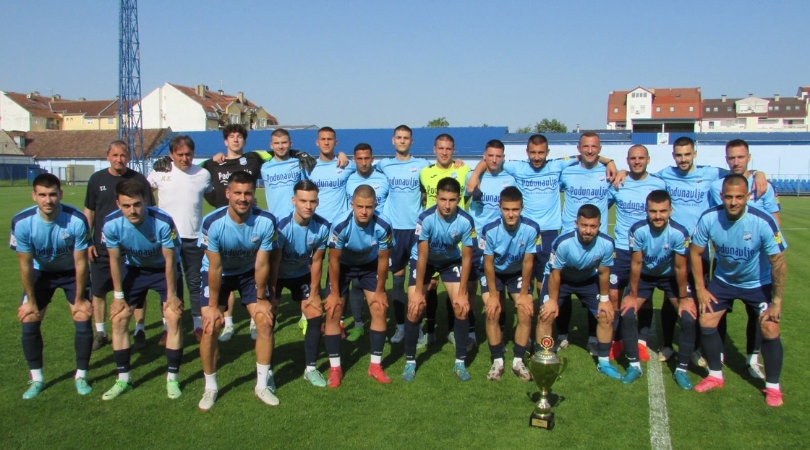
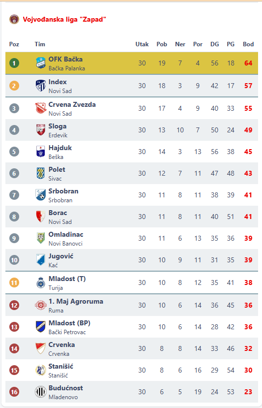
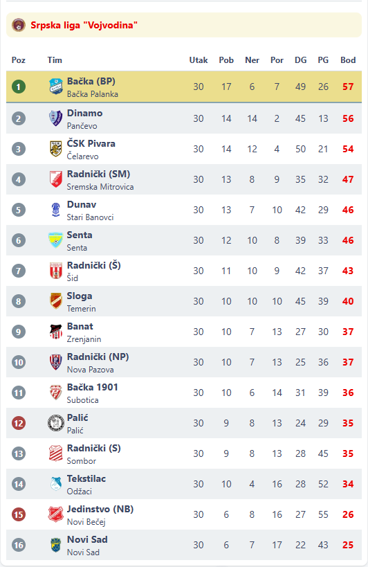

Najzasluzniji za povratak u Srpsku ligu, trener Trivo Ilic.
Najveci uspeh kluba bio je igranje u Superligi Srbije protiv najvecih klubova u drzavi.
Najzasluzniji za povratak u Srpsku ligu, trener Trivo Ilic.

Stoje: trener Ilic, Grahovac, Sofinkic, Koprivica, Dobranic, Kovacevic, Cuk, Culibrk, Radakovic, Balinovic, Jevtic, Bjelos, Gluvic M., Veselinovic;
Cuce: Vinovic, Nijemcevic, Balabanovic, Vukic, Glamocak, Vojvodic, Petkovic, Bajic, Gluvic B., Rakic.

Tabela Vojvodjanske lige "Zapad" iz sezone 2012/13

Tabela Srpske lige Vojvodina iz sezone 2013/14